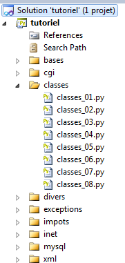

5. Classes and Objects
A class is the template from which objects are created. An object is said to be an instance of a class.
 |
5.1. An Object Class
Program (classes_01)
# -*- coding=utf-8 -*-
class Object:
"""an empty Object class"""
# any variable can have attributes by default
obj1 = Object()
obj1.attr1 = "one"
obj1.attr2 = 100
# displays the object
print "obj1=[{0},{1}]".format(obj1.attr1, obj1.attr2)
# modifies the object
obj1.attr2 += 100
# displays the object
print "object1=[{0},{1}]".format(obj1.attr1, obj1.attr2)
# assigns the object1 reference to object2
obj2 = obj1
# modifies obj2
obj2.attr2 = 0
# displays both objects
print "object1=[{0},{1}]".format(obj1.attr1, obj1.attr2)
print "object2=[{0},{1}]".format(obj2.attr1, obj2.attr2)
Notes:
- line 4: another form of comment. Preceded by three "", it can span multiple lines;
- lines 3-4: an empty object class;
- line 7: instantiation of the Object class;
- line 17: reference copying. The variables obj1 and obj2 are two pointers (references) to the same object.
Results
5.2. A Person class
Program (classes_02)
# -*- encoding=utf-8 -*-
class Person:
# class attributes
# not declared - can be created dynamically
# method
def identity(self):
# initially, uses non-existent attributes
return "[{0},{1},{2}]".format(self.first_name, self.last_name, self.age)
# ---------------------------------- main
# Attributes are public and can be created dynamically
p = Person()
p.first_name = "Paul"
p.last_name = "Langevin"
p.age = 48
# calling a method
print "person={0}\n".format(p.identity())
Notes:
- lines 3-10: a class with a method;
- Line 8: Every method in a class must have the
selfobject—which refers to the current object—as its first parameter.
Results
5.3. The Person class with a constructor
Program (classes_03)
# -*- coding=utf-8 -*-
class Person:
# constructor
def __init__(self, first_name, last_name, age):
self.first_name = first_name;
self.last_name = last_name;
self.age = age;
# method
def identity(self):
# initially, uses non-existent attributes
return "[{0},{1},{2}]".format(self.first_name, self.last_name, self.age)
# ---------------------------------- main
# a Person object
p = Person("Paul", "Langevin", 48)
# calling a method
print "person={0}\n".format(p.identity())
Notes:
- line 6: the class constructor is called __init__. As with other methods, its first parameter is self;
- line 18: A Person object is created using the class constructor.
Results
5.4. The Person class with validity checks in the constructor
Program (classes_04)
# -*- coding=utf-8 -*-
import re
# -------------------
# a custom exception class
class MyError(Exception):
pass
class Person:
# constructor
def __init__(self, first_name="x", last_name="x", age=0):
# the first name must not be empty
match = re.match(r"^\s*(\S+)\s*$", first_name)
if not match:
raise MyError("The first name cannot be empty")
else:
self.first_name = match.groups()[0]
# the last name must not be empty
match = re.match(r"^\s*(\S+)\s*$", last_name)
if not match:
raise MyError("The last name cannot be empty")
else:
self.name = match.groups()[0]
# age must be valid
match = re.match(r"^\s*(\d+)\s*$", str(age))
if not match:
raise MyError("age must be a positive integer")
else:
self.age = match.groups()[0]
def __str__(self):
return "[{0},{1},{2}]".format(self.first_name, self.last_name, self.age)
# ---------------------------------- main
# a Person object
try:
p = Person(" Paul "," Langevin ", 48)
print "person={0}".format(p)
except MyError, error:
print error
# another Person object
try:
p = Person(" xx ", " yy ", " zz ")
print "person={0}".format(p)
except MyError, error:
print error
# another person
try:
p = Person()
print "person={0}".format(p)
except MyError, error:
print error
Notes:
- lines 7-8: a MyError class derived from the Exception class. It adds no functionality to the latter. It is only there to provide a custom exception;
- Line 13: The constructor has default values for its parameters. Thus, the operation p = Person() is equivalent to p = Person("x", "x", 0);
- Lines 15–9: The first_name parameter is checked. It must not be empty. If it is, the MyError exception is thrown with an error message;
- Lines 21–25: Same for the last_name;
- lines 27–31: age verification;
- lines 33-34: the __str__ function replaces the method previously called identite;
- lines 38–42: instantiate a Person and display its identity;
- line 39: instantiation;
- line 40: display. The operation requires displaying the person p as a string. The Python interpreter then automatically calls the method p.__str__() if it exists. This method serves the same purpose as the toString() method in Java or .NET languages;
- lines 41–42: handling of a potential MyError exception. Then displays the error message associated with the exception;
- lines 44–48: same as above for a second instance of Person created with incorrect parameters;
- lines 50–54: same as above for a third person instantiated with default parameters.
Results
5.5. Adding a method that acts as a second constructor
Program (classes_05)
# -*- coding=utf-8 -*-
import re
# -------------------
# a custom exception class
class MyError(Exception):
pass
class Person:
# class attributes
# undeclared - can be created dynamically
# constructor
def __init__(self, first_name="x", last_name="x", age=0):
# the first name must not be empty
match = re.match(r"^\s*(\S+)\s*$", first_name)
if not match:
raise MyError("The first name cannot be empty")
else:
self.first_name = match.groups()[0]
# The last name must not be empty
match = re.match(r"^\s*(\S+)\s*$", name)
if not match:
raise MyError("The name cannot be empty")
else:
self.name = match.groups()[0]
# age must be valid
match = re.match(r"^\s*(\d+)\s*$", str(age))
if not match:
raise MyError("age must be a positive integer")
else:
self.age = match.groups()[0]
def initWithPerson(self, p):
# initializes the current object with a person p
self.__init__(p.first_name, p.last_name, p.age)
def __str__(self):
return "[{0},{1},{2}]".format(self.first_name, self.last_name, self.age)
# ---------------------------------- main
# a Person object
try:
p0 = Person("Paul", "Langevin", 48)
print "person={0}".format(p0)
except MyError as error:
print error
# another Person object
try:
p1 = Person(" xx ", " yy ", " zz ")
print "person={0}".format(p1)
except MyError, error:
print error
# another person
p2 = Person()
try:
p2.initWithPersonne(p0)
print "person={0}".format(p2)
except MyError, error:
print error
Notes:
- The difference from the previous script is in lines 35–37. We have added the initWithPerson method. This method calls the __init__ constructor. Unlike in typed languages, it is not possible to have methods with the same name that are distinguished by the nature of their parameters or their return values. Therefore, it is not possible to have multiple constructors that would create the object from different parameters, in this case an object of type Person.
Results
5.6. A list of Person objects
Program (classes_06)
# -*- coding=utf-8 -*-
class Person:
...
# ---------------------------------- main
# creating a list of Person objects
group=[Person("Paul","Langevin",48), Person("Sylvie","Lefur",70)]
# identities of these people
for i in range(len(group)):
print "group[{0}]={1}".format(i, group[i])
Notes:
- Lines 3-5: the Person class already described
Results
5.7. Creating a class derived from the Person class
Program (classes_07)
# -*- coding=utf-8 -*-
import re
class Person:
...
class Teacher(Person):
def __init__(self, first_name="x", last_name="x", age=0, subject="x"):
Person.__init__(self, first_name, last_name, age)
self.subject = subject
def __str__(self):
return "[{0},{1},{2},{3}]".format(self.first_name, self.last_name, self.age, self.subject)
# ---------------------------------- main
# Creating a list of Person objects and their subclasses
group=[Teacher("Paul","Langevin",48,"English"), Person("Sylvie","Lefur",70)]
# identities of these people
for i in range(len(group)):
print "group[{0}]={1}".format(i, group[i])
Notes:
- lines 5-6: the Person class is already defined;
- line 8: declares the Teacher class as a subclass of the Person class;
- line 10: the constructor of the derived Teacher class must call the constructor of the parent Person class;
- lines 21-22: to display group[i], the interpreter uses the method group[i].__str__(). The __str__() method used is that of the actual class of group[i], as shown in the results below.
Results
5.8. Creating a second class derived from the Person class
Program (classes_08)
# -*- coding=utf-8 -*-
import re
class Person:
...
class Teacher(Person):
...
class Student(Person):
def __init__(self, first_name="x", last_name="x", age=0, education="x"):
Person.__init__(self, first_name, last_name, age)
self.training = training
def __str__(self):
return "[{0},{1},{2},{3}]".format(self.first_name, self.last_name, self.age, self.education)
# ---------------------------------- main
# Create a list of Person objects and derivatives
group = [Teacher("Paul", "Langevin", 48, "English"), Person("Sylvie", "Lefur", 70), Student("Steve", "Boer", 22, "iup2 quality")]
# identities of these people
for i in range(len(group)):
print "group[{0}]={1}".format(i, group[i])
Notes:
- This script is similar to the previous one.
Results